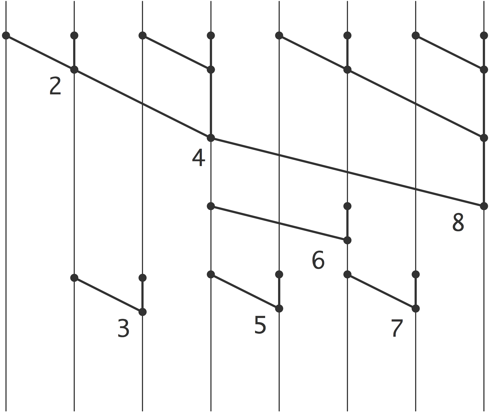

For operations to be executable in parallel they need to be independent. That makes recurrences problematic to evaluate in parallel. Recurrences occur in obvious places such as solving a triangular system of equations (section~ 5.3.5 ), but they can also appear in sorting and many other operations.
In this appendix we look at parallel prefix operations: the parallel execution of an operation that is defined by a recurrence involving an associative operator. (See also section~ 6.9.2 for the `recursive doubling' approach to parallelizing recurrences.) Computing the sum of an array of elements is an example of this type of operation (disregarding the
for the moment). Let $\pi(x,y)$ be the binary sum operator: \[ \pi(x,y)\equiv x+y, \] then we define the prefix sum of $n\geq 2$ terms as \[ \Pi(x_1,\ldots,x_n) = \begin{cases} \pi(x_1,x_2)&\hbox{if $n=2$}\\ \pi\bigl( \Pi(x_1,\ldots,x_{n-1}),x_n\bigr)&\hbox{otherwise} \\ \end{cases} \]
As a non-obvious of a prefix operation, we could count the number of elements of an array that have a certain property.
Let $p(\cdot)$ be a predicate, $p(x)=1$ if it holds for~$x$ and 0~otherwise. Define a binary operator $\pi(x,y)$ so that its reduction over an array of numbers yields the number of elements for which $p$ is true.So let us now assume the existence of an associative operator~$\oplus$, an array of values~$x_1,\ldots,x_n$. Then we define the prefix problem as the computation of $X_1,\ldots,X_n$, where \[ \begin{cases} X_1=x_1\\ X_k=\oplus_{i\leq k} x_i \end{cases} \]
crumb trail: > prefix > Parallel prefix
The key to parallelizing this is the realization that we can compute partial reductions in parallel: \[ x_1\oplus x_2, \quad x_3\oplus x_4, \ldots \] are all independent. Furthermore, partial reductions of these reductions, \[ (x_1\oplus x_2) \oplus (x_3\oplus x_4),\quad \ldots \] are also independent. We use the notation \[ X_{i,j}=x_i\oplus\cdots\oplus x_j \] for these partial reductions.
You have seen this before in section~ 2.1 : an array of $n$ numbers can be reduced in~$\lceil \log_2 n\rceil$ steps. What is missing to make this a full prefix operation is computation of all intermediate values.
Observing that, for instance, $X_3=(x_1\oplus x_2)\oplus x_3=X_2\oplus x_3$, you can now imagine the whole process; see figure~ 21.1 for the case of $8$~elements.
FIGURE 21.1: A prefix operation applied to 8 elements
To compute, say, $X_{13}$, you express $13=8+4+1$ and compute $X_{13}=X_8\oplus X_{9,12} \oplus x_13$.
In this figure, operations over the same `distance' have been horizontally aligned corresponding to a SIMD type execution. If the execution proceeds with a task graph, some steps can be executed earlier than the figure suggests; for instance $X_3$ can be computed simultaneously with~$X_6$.
Regardless the arrangement of the computational steps, it is not hard to see that the whole prefix calculation can be done in $2\log_2n$ steps: $\log_2 n$~steps for computing the final reduction~$X_n$, then another $\log_2 n$ steps for filling in the intermediate values.
crumb trail: > prefix > Sparse matrix vector product as parallel prefix
It has been observed that the sparse matrix vector product can be considered a prefix operation; see~ [Blelloc:segmented-report] . The reasoning here is we first compute all $y_{ij}\equiv a_{ij}x_j$, and subsequently compute the sums $y_i=\sum_j y_{ij}$ with a prefix operation.
A~prefix sum as explained above does not compute the right result. The first couple of $y_{ij}$ terms do indeed sum to~$y_1$, but then continuing the prefix sum gives $y_1+y_2$, instead of~$y_2$. The trick to making this work is to consider two-component quantities $\langle y_{ij},s_{ij}\rangle$, where \[ s_{ij} = \begin{cases} 1&\hbox{if $j$ is the first nonzero index in row $i$}\\ 0&\hbox{otherwise} \end{cases} \] Now we can define prefix sums that are `reset' every time $s_{ij}=1$.
crumb trail: > prefix > Horner's rule
Horner's rulefor evaluating a polynomial is an example of a simple recurrence:
y = c\_0 x^n +\cdots+ c\_n x^0 \equiv \begin{cases} t\_0 \leftarrow c\_0\\ t\_i \leftarrow t\_{i-1}\cdot x + c\_i&i=1,…,n\\ y = t\_n\\ \end{cases} \end{equation}or, written more explicitly \[ y = \left(\left( ( c_0\cdot x + c_1 ) \cdot x + c_2 \right) \cdots \right) . \] Like many other recurrences, this seemingly sequential operation can be parallelized: \[ \begin{array}{cccc} c_0 x + c_1 & c_2 x + c_3 & c_4 x + c_5 & c_6 x + c_7\\ \multicolumn{2}{@{}c@{}}{${\upbracefill}$} & \multicolumn{2}{@{}c@{}}{${\upbracefill}$} \\ \multicolumn{2}{c}{\cdot \times x^2 + \cdot}& \multicolumn{2}{c}{\cdot \times x^2 + \cdot}\\ \multicolumn{4}{c}{${\upbracefill}$} \\ \multicolumn{4}{c}{\cdot \times x^4 + \cdot}\\ \end{array} \]
However, we see here that some cleverness is needed: we need $x,x^2,x^4$ etc.\ to multiply subresults.
Interpreting Horner's rule as a prefix scheme fails: the `horner operator' $h_x(a,b)=ax+b$ is easily seen not to be associative. From the above treewise calculation we see that we need to carry and update the $x$, rather than attaching it to the operator.
A little experimenting shows that \newcommand\xyvec[2]{ \left[ \begin{array}{c} #1\\#2 \end{array} \right] } \[ h\left( \xyvec ax,\xyvec by \right) \equiv \xyvec {ay+b}{xy} \] serves our purposes: \[ h\left( \xyvec ax,\xyvec by ,\xyvec cz \right) = \left\{ \begin{array}{lll} h\left( h\left( \xyvec ax,\xyvec by \right ),\xyvec cz \right) &=& h\left( \xyvec {ay+b}{xy},\xyvec cz \right) \\ h\left( \xyvec ax,h\left( \xyvec by ,\xyvec cz \right ) \right) &=& h\left( \xyvec ax,\xyvec { bz+c } {yz} \right) \end{array} \right\} = \xyvec{ayz + bz +c}{xyz} \] With this we can realize Horner's rule as \[ h\left( \xyvec {c_0}x,\xyvec {c_1}x,…,\xyvec {c_n}x \right) \]
As an aside, this particular form of the `horner operator' corresponds to the `rho' operator in the programming language APL , which is normally phrased as evaluation in a number system with varying radix.